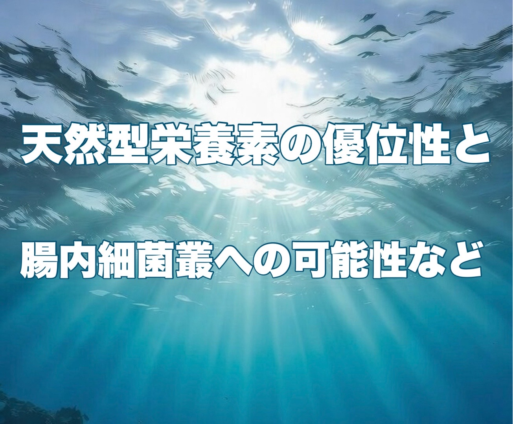
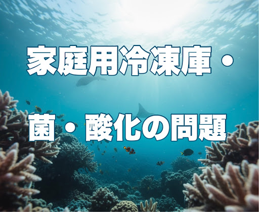
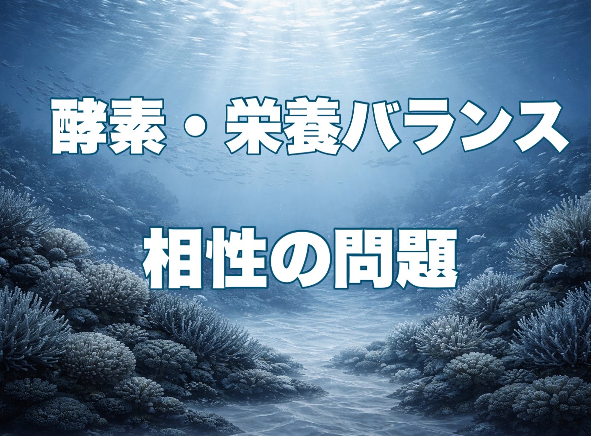
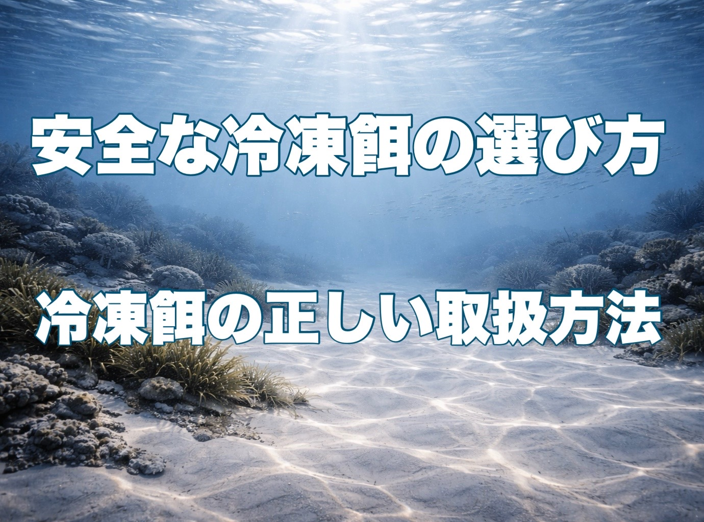
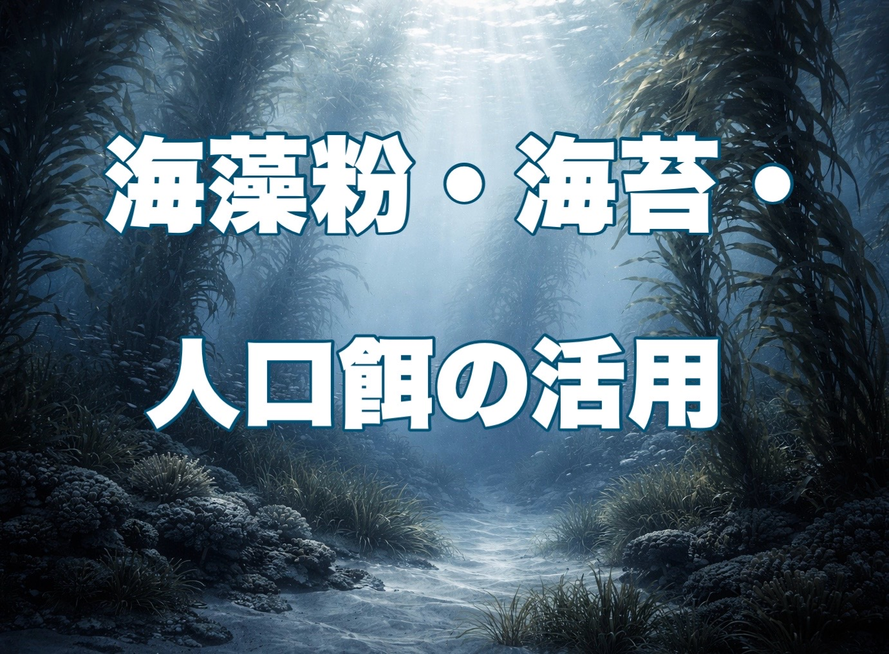
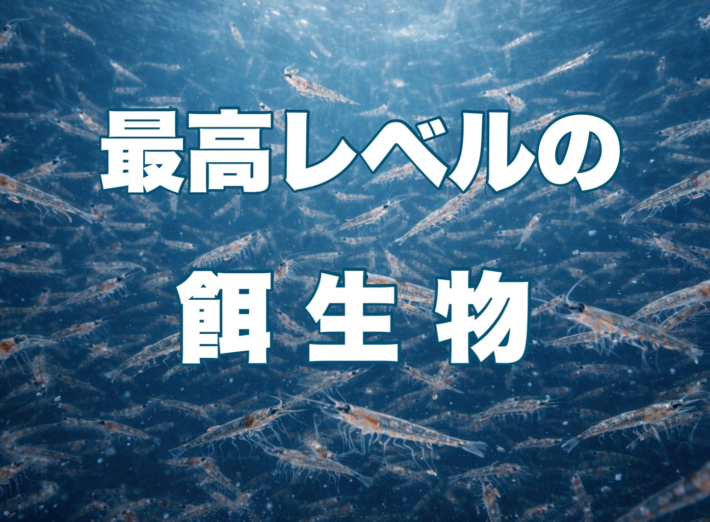
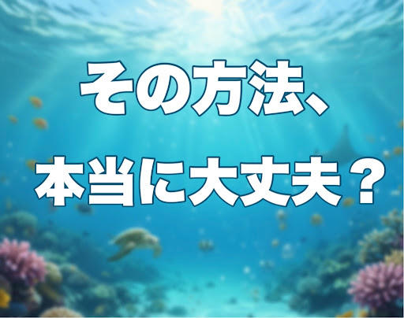
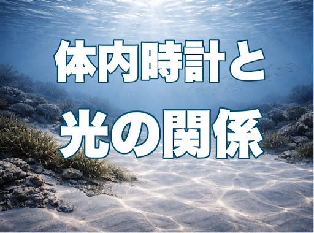
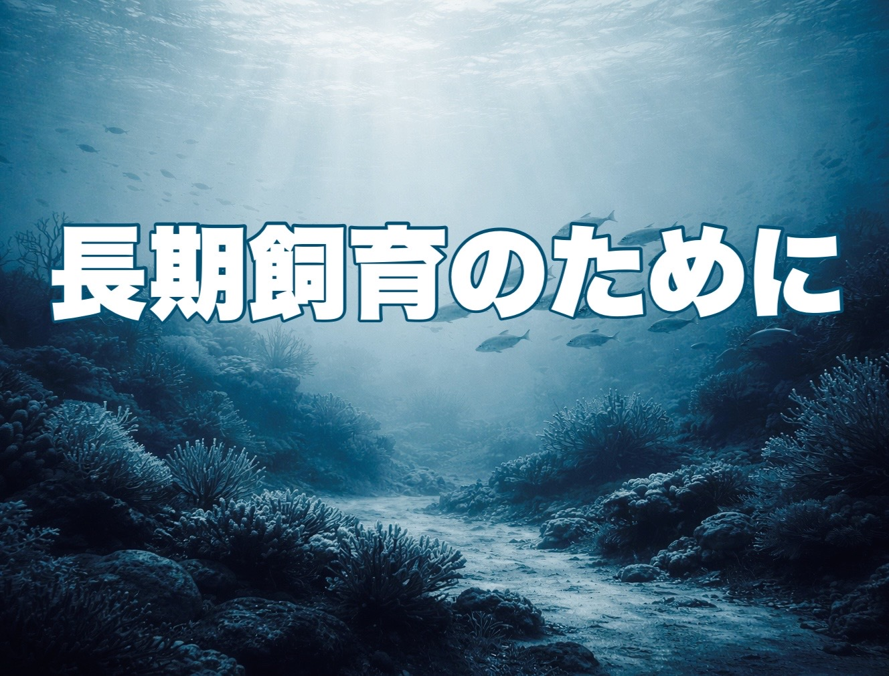

アクアリウムにおける様々な話題をコラムにまとめています。

ご紹介用QRコード
アクア仲間とのシェアや、イベントでのご紹介にご活用ください。
Welcome to my homepage.
A collection of columns on long-term marine aquarium keeping.
since 2026
同じ志の方の一助になれば幸いです
アクアリウムにおける様々な話題をコラムにまとめています。
ご紹介用QRコード
アクア仲間とのシェアや、
現代のマリンアクアリウムにおける「人工餌」の問題点を様々な側面から深堀りしていきます。

様々なトラブルの末、学びや試行錯誤を経て生餌中心の給餌に変換していった経緯を振り返ります。

嗜好性・消化性、そして必須脂肪酸であるDHA/EPAの重要性などの面から解説します。

必須遊離アミノ酸であるタウリンや、海産生物由来の機能性色素の役割について解説します。

天然型栄養素の優位性と腸内細菌叢への再取り込みの可能性や薬膳的視点について考察します。

冷凍餌加工に伴うリスクを家庭用冷凍庫の問題・菌による影響・酸化による毒化などの面から解説しています。

冷凍餌加工に伴うリスクを酵素の暴走による影響・栄養バランスの偏り・栄養素同士の相性などの面から解説しています。

海水魚のための「安全な冷凍餌の選び方」と「冷凍餌の正しい取扱方法」についてまとめています。

草食魚及び雑食魚の海藻質補給の意義と効率的な与え方として海藻粉・海苔・人工餌の活用についてお話しています。

最高レベルの餌生物であるツノナシオキアミの栄養的魅力と, 主食として採用した理由について詳しく解説します。

水合わせの際、環境水が急激に変わった時に魚の体内でどのような事が起こっているのかを解説しながら掘り下げて行きます。

魚の睡眠は光に依存しており、魚の長期飼育を目指すなら規則正しい暗所時間をきちっと確保することは重要な健康維持要素になると考えています。

水温管理とは“環境管理”ではなく“体温管理”であることを基本に高水温で起こる慢性的な弊害を掘り下げながら、水槽の設定温度について考察しました。